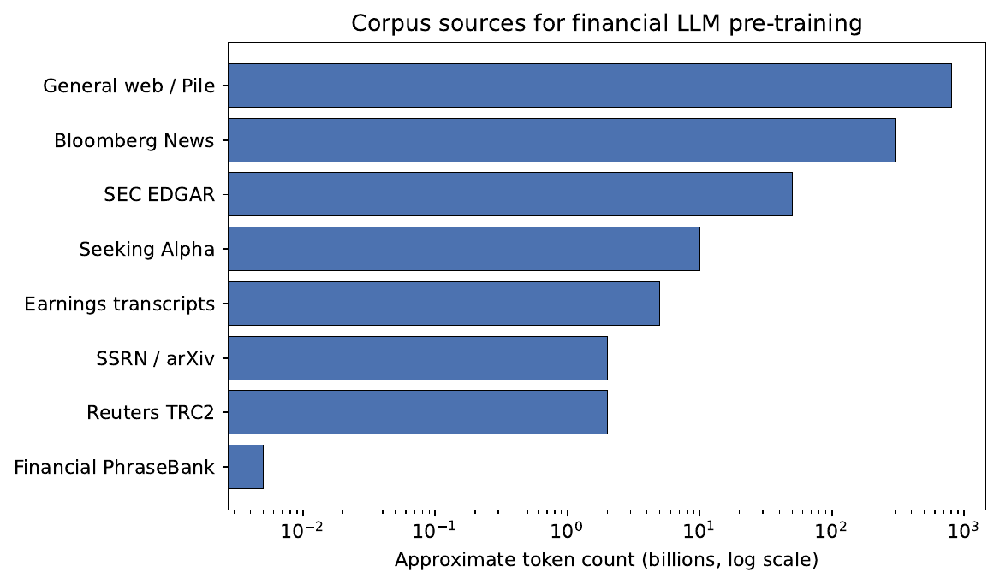

When finance needs its own models — and when a general one will do.
Juan F. Imbet · Paris Dauphine – PSL University
Summer school · math one click away — press m or click ⚙ "Under the hood"
Roadmap
Where this lecture is going
Why finance needs its own models — what makes financial language genuinely different.
A taxonomy — encoder vs. decoder, built from scratch vs. adapted.
Pre-training strategies — the build-vs-continue decision and DAPT.
Benchmarks — where specialist models win, and where scale erases their edge.
Deployment — licensing, hosting, and the cost-vs-accuracy trade-off.
the bigger picture
The question isn't breadth versus depth — it's how to combine them.
A general model knows the world; a financial model knows the register. The art is
orienting a model toward financial text without losing the world knowledge that makes it useful.
What you'll be able to do
Five things to take away from today
By the end of the lecture you should be able to:
Explain why general-purpose LLMs underperform on financial text, and name the linguistic features that create the gap.
Place any financial model in a taxonomy: encoder-only vs. decoder-only; from-scratch vs. domain-adaptive vs. fine-tune-only.
Apply domain-adaptive pre-training (DAPT) and design a balanced corpus.
Read FinQA / FLUE / FinBen results in terms of the task taxonomy.
Weigh licensing, compute, governance, and accuracy when choosing a model for production.
01
Why domain-specific LLMs?
What makes financial language different — and why a general model misreads it.
The central tension
Breadth knows the world; finance demands precision
A general model is trained on hundreds of billions of web tokens, so it has breadth —
world knowledge about options, CDS, and Basel III. But finance demands specificity.
why "close enough" is dangerous here
A model that confuses "basis risk" with "basis points", misreads an income-statement table, or
reads "liability" with its everyday connotation produces outputs that are not merely imprecise but
dangerous downstream.
the resolution
Not breadth vs. depth, but how to combine them. Domain-specific financial LLMs orient
pre-training, fine-tuning, or both toward the linguistic distribution of financial text.
First question: what actually makes that language different?
Financial language is a distinct register
Three things general corpora barely contain
Financial text isn't just English with jargon — it differs structurally along three axes.
Lexical specificity. Common words carry precise, sometimes reversed meanings:
"liability", "short", "haircut". The Loughran–McDonald dictionary catalogues ~350 words whose polarity
is neutral or inverted in SEC filings vs. general English.
Numeric density. "Revenue grew 12.3% YoY to \(\$\)4.7B" is fluent English and
an arithmetic claim. FinQA requires multi-step reasoning over tables from 10-Ks.
Tabular embedding. Income statements, balance sheets, and loan tapes encode meaning
in 2-D grids; standard tokenisation flattens them and loses the row/column alignment.
the definition that follows
A model is financially literate to the extent it resolves token meaning on all three dimensions.
A concrete cause
The mismatch is, underneath, a tokenisation problem
Before a model can reason about "EBITDA", it has to chop the word into pieces.
A general model chops it badly.
Tokenisers trained on financial corpora represent abbreviations (EBITDA,
CUSIP, LIBOR) as single tokens.
BloombergGPT trained a custom BPE tokeniser on its combined general+financial corpus
precisely so domain tokens stay compact.
why it matters
Fewer tokens per financial term ⇒ shorter sequences, lower compute, and crucially a single embedding
the model can specialise — instead of a fragile composition over fragments.
How general models fail
Four concrete failure modes, one shared cause
Failure mode
Evidence
Sentiment polarity inversion
"strong", "leverage", "unprecedented" flip valence; a general model fine-tuned on Financial PhraseBank
trails FinBERT despite more parameters.
Numerical hallucination
GPT-class models fabricate EPS / figures that diverge from the source 10-K (Kang & Liu, 2023).
Table-parsing failure
On FinQA, GPT-3 (175B) zero-shot <60%; fine-tuned specialists >80%. Prompting alone does not close the gap.
Regulatory ambiguity
ISDA / Basel / SEC comment letters are a legal sub-dialect; SEC-BERT beats general BERT on NER and clause classification.
common root
All four reflect the gap between the financial distribution and the web-text distribution that dominates
pre-training. The remedy: shift the model's prior toward finance.
02
A taxonomy of financial LLMs
Every financial model is a point in a 2-D design space — and where it lands dictates everything.
Two axes of classification
Place any financial model on a 2-D map
Where a model sits on this map dictates its compute cost, capability profile, and deployment constraints.
Fine-tune / instruction-tune only (FinMA, InvestLM)
Definition — what makes a model "financial"
A model is financial if its pre-training corpus has a significant financial fraction,
or it is fine-tuned on financial NLP tasks, or its tokeniser is extended for financial vocabulary.
The encoder–decoder family
T5 in finance: read the whole source, then write
Some tasks need a model that fully digests a long document before producing a single word of output.
That's what encoder–decoder models do.
Canonical model — T5 / FLAN-T5
Earnings-call summarisation (hours of commentary → structured abstract)
when still preferred
Constrained-output, extraction-heavy summarisation — even though large decoder-only models (FinMA)
now also handle these at scale.
The encoder family
FinBERT, SEC-BERT, FinBERT-tone: the classification workhorses
BERT-base, ~3B tokens of EDGAR only (10-K/Q, 8-K, proxies)
NER + clause classification on regulatory text
why default to encoders for classification
110–340M params, open weights, well-understood fine-tuning. EDGAR is a coherent legal sub-dialect —
a news-trained model does not fully transfer to it.
Worked example
"Cautiously optimistic" — and why the right model hears caution
Transcript excerpt
"While we are cautiously optimistic about the trajectory of our core business, we want to
flag meaningful headwinds in the European segment, driven by continued softness
in consumer demand and heightened competitive pressure."
General sentiment model
Labels positive — "optimistic" is a strong positive signal in
product-review / social-media text.
FinBERT-tone
Labels uncertain / pessimistic — "cautiously optimistic" is a hedge;
"headwinds", "softness" are near-universally negative in this register.
downstream stakes
This tone feeds analyst sentiment indices that drive systematic trading strategies (Tetlock 2007).
A label error here is a position error.
The decoder family
BloombergGPT, FinGPT, FinMA, InvestLM: four points on a spectrum
Model
Scale
Approach
BloombergGPT
50B params, 708B tokens
From scratch; ~50/50 finance (363B FinPile) / general (345B Pile, Wiki, books). Beats peers on financial NLP, matches GPT-NeoX-20B on general tasks.
FinGPT
LoRA on LLaMA/ChatGLM/Falcon
Open-source, data-centric; fine-tune on a single A100 with live news APIs. Democratisation over peak accuracy.
FinMA (PIXIU)
7B LLaMA
Instruction-tuned on 136k financial instruction–response pairs across 5 task types. Strong in-distribution; weaker on unseen formats.
InvestLM
65B LLaMA
Instruction-tuned on a small, curated set (CFA Qs, research reports). Large base beats 7B models with fewer examples.
Supporting work: Keshri et al. (2025) survey BloombergGPT's full downstream applications (news summarisation, fraud detection, trading strategy optimisation). Zhang et al. (2023) show instruction-formatting even a small financial-sentiment dataset yields strong classification gains. Hirano et al. (2024b) show model merging can build instruction-following FinLLMs without any instruction data.
Reading the four decoders
The same objective, four different bets
All four decoders learn the same way — predict the next word — but each makes a different bet
on the accuracy-vs-accessibility trade.
BloombergGPT buys peak accuracy with from-scratch compute few can match.
FinGPT trades peak accuracy for reproducibility on a single A100.
FinMA is strong in-distribution but brittle on unseen formats.
InvestLM shows a large base + small curated set can beat 7B models.
A practical heuristic
Encoder or decoder? Ask what the output looks like
Decision rule
Fixed label space (pos/neg/neutral, default/no-default)? ⇒ start with an
encoder (FinBERT, SEC-BERT): compact, fast, calibrated.
Open-ended output (draft a risk section, answer from a 10-K)? ⇒ a
decoder is necessary.
Encoders: 110–340M, fast to fine-tune, well-understood.
Decoders: an order of magnitude larger, more inference memory, harder to calibrate for structured prediction.
Hybrid: a small decoder + a well-indexed document store (RAG) can substitute for a much larger model (see the LLM-agents lecture).
03
Pre-training strategies for finance
Build a new model, or continue an existing one? The dominant answer is "continue."
The build decision
From scratch, or continue from a general model?
When Bloomberg built BloombergGPT it faced the choice every team confronts: train a new model on a
mixed corpus, or start from a general model and continue pre-training on financial text?
From scratch
Clean control of tokeniser, positional encoding, corpus weights
Requires compute + data that very few organisations possess
Continue (DAPT)
Reuses learned representations of a general foundation model
Extends toward the domain at a fraction of the cost
The dominant strategy in practice
Domain-adaptive pre-training
DAPT: keep training the model, but on finance
Take a finished general model and keep teaching it — feeding only financial text, gently,
so it leans toward the domain without forgetting what it knew.
Gururangan et al. (2020): consistent downstream gains across 4 domains; largest when the domain is most dissimilar from pre-training.
Finance is strongly out-of-distribution for web-text models ⇒ DAPT gains should be large.
Budget: typically 1–10B domain tokens vs. hundreds of billions for the original pre-training.
How much data — and two refinements
The first billion tokens does most of the work
DAPT shows diminishing returns: the largest gain is in the first ~1B domain tokens, with smaller increments thereafter.
Encoders (110–340M): 1–5B domain tokens usually suffice.
Decoders (7–70B): need proportionally larger corpora.
TAPT (task-adaptive)
Further pre-train on unlabelled examples from the task distribution before supervised
fine-tuning. Consistent gains, but needs task-specific unlabelled data.
catastrophic forgetting
Narrow-domain continuation can degrade general ability. Mitigate with a reduced LR, a large enough
corpus, and replay — mixing a small fraction of general data back in.
Hirano (2024): Japanese financial LLMs confirm DAPT gains generalise across languages and sub-domains.
Corpus composition
The web dwarfs every financial source — and that's the point
Source
Scale
Quality
Access
Coverage
Bloomberg News
~300B
Very high
Proprietary
News, markets
SEC EDGAR
~50B
High
Open
Regulatory, corporate
Reuters TRC2
~2B
High
Licensed
Financial news
Financial PhraseBank
~5M
High
Open
Sentiment-labelled
Seeking Alpha
~10B
Medium
Open/API
Retail analysis
Earnings transcripts
~5B
High
Commercial
Corporate comms
SSRN / arXiv finance
~2B
High
Open
Academic research
General web (Pile)
~800B
Mixed
Open
Broad coverage
the defining fact
General web text (~800B) dwarfs even the largest financial source. This asymmetry is exactly
why DAPT beats from-scratch: cheaply shift a model that already has the breadth, rather than rebuild it.
Corpus composition — visualised
On a log scale, the web is an ocean; finance is a pond
Even the largest proprietary financial corpus is tiny relative to general web text — the clearest visual argument for DAPT over training from scratch.

Figure. Approximate token counts of major pre-training corpus sources on a log scale. The Pile (~800 B tokens) dwarfs every financial source — the key reason domain-adaptive pre-training is more cost-effective than training from scratch.
Source: Chapter 8, Figure 8.1 (generated deterministically from corpus table figures).
Example
Building a central-bank communication model
Goal: classify FOMC paragraphs as hawkish vs. dovish — which needs the precise
vocabulary of monetary policy ("accommodation", "balance-sheet normalisation", "neutral rate").
the trade it makes
This model would lose on general financial tasks — but on monetary-policy communication it
beats a general model fine-tuned on the same labels, because pre-training aligns with both the
vocabulary and the pragmatics of central-bank language.
04
Benchmark comparisons
Where specialist models win, where scale erases their edge — and what the numbers hide.
The standard benchmarks
FinQA, FLUE, FinBen each stress a different muscle
Bench
What it tests
Headline numbers
FinQA
8,281 QA pairs over 10-K/Q tables + prose; multi-step arithmetic. The hardest standard benchmark.
Fine-tuned specialists ~68–72% exec. acc.; zero-shot GPT-4 class ~55–60%.
Designed to test decoder open-ended generation, not just classification.
Cook & Kazinnik (2023) demonstrate a complementary evaluation framework using bank earnings calls — practical orientation for central-bank researchers where existing public benchmarks may not match the deployment distribution.
how to read the numbers
Each benchmark stresses a different capability. FinQA isolates table + arithmetic reasoning;
FLUE isolates lexical NLU; FinBen pushes open-ended generation. A model strong on one is not
automatically strong on the others.
Scoring FinQA
"Execution accuracy" — was the final number right?
FinQA doesn't grade the wording of the reasoning — it checks whether the model's computed answer
matches the gold number, allowing a tiny tolerance for rounding.
Why a tolerance at all?
A model can execute the right reasoning program yet differ from the gold answer by a rounding step
(e.g. reporting a ratio to two decimals). A small relative \(\epsilon\) credits correct reasoning
without rewarding spurious over-precision.
Where the edge lives
FinLLMs win on words, lose on reasoning at scale
FinLLMs win
Tasks tied to domain lexical semantics:
PhraseBank sentiment — FinBERT ≫ BERT/RoBERTa, even after equal fine-tuning.
EDGAR NER — SEC-BERT ≫ general BERT (entity surface forms differ).
general models win / tie
Tasks needing broad knowledge or deep reasoning:
FinQA with chain-of-thought on a large model often matches a smaller specialist — reasoning is a function of scale.
The scaling crossover
The bigger the model, the smaller the domain advantage
Domain advantage vs. model scale
The domain advantage is roughly inversely proportional to model scale at fixed difficulty.
≤7B: DAPT gives large, consistent gains.
≥70B: gains persist only for lexically sensitive tasks (sentiment, tone, NER); they fade for long-document reasoning.
a countervailing result
Rahimikia & Drinkall: year-specific FinLLMs can still beat far larger general models on return prediction —
once one controls for look-ahead bias.
Read every number with suspicion
Two caveats every benchmark figure carries
data contamination
A benchmark may already sit in a model's pre-training corpus. Several large models are suspected
to have seen PhraseBank / FinQA train splits, inflating apparent performance. Rigorous evaluation needs
held-out test sets with temporal cutoffs after the model's knowledge cutoff — which most
published benchmarks do not enforce.
hallucination is not solved by domain pre-training
It can be worsened: a model trained on financial news learns to generate plausible-but-unverified
statistics. Kang & Liu (2023) find finance-trained models more likely to fabricate specific
figures. Retrieval augmentation, constrained generation, and factual verification matter just as much for
FinLLMs as for general models.
05
Practical deployment considerations
Topping a benchmark is not the same as being deployable.
Deployment is a different question
The best benchmark score may be undeployable
the bigger picture
A model that tops FinQA but cannot be licensed commercially, needs a compute budget you cannot
sustain, or produces outputs you cannot trace to source for audit — is not a deployable model.
Three consequential dimensions beyond accuracy:
Licensing & data governance
Hosting strategy (cloud API vs. on-prem)
Cost-vs-performance ⇒ hybrid architectures
Licensing, hosting, governance
Can you legally use it, and can you afford to host it?
Model
License
BloombergGPT
Proprietary, not released (terminal subscribers only)
GDPR / GLBA / CCPA constrain training on customer data. Customer balances, transactions, and credit scores
generally cannot train a model for other customers without consent. Synthetic data
is a common workaround — at the cost of distribution shift.
Hosting. FinBERT (110–340M): single A10G, sub-50ms, fits in memory.
7–50B decoders: multi-GPU; quantisation (GPTQ, AWQ, QLoRA) cuts memory 2–4× to fit
13–30B on one server. 50B+: cluster-scale, few institutions.
Cost vs. performance
Let a small model handle the easy majority
The cheapest path is rarely one model. Send the easy, high-confidence cases to a small fast model
and route only the hard ones to a large model or a human.
Hybrid routing pattern
A small, fast FinLLM handles the easy majority; low-confidence queries route to a larger model or a human.
Effective when difficulty is skewed — a large "easy" head + a small "hard" tail.
Cost vs. performance
RAG: ground the model instead of growing it
Grounding instead of growing
A compact 7–13B decoder grounded in a well-indexed EDGAR store can match a larger ungrounded model on
document tasks — at lower cost and with full traceability (an SR 11-7 / regulatory requirement).
The retrieved passage pins generated figures to source text, cutting numerical hallucination.
Traceability is not a nicety: model-risk regimes require an auditable link from output back to evidence.
This makes a small grounded model a regulatory-grade alternative to a large ungrounded one.
Liu et al. (2024) extend FinGPT to retrieval-augmented search agents customised for individual and institutional users — accounting for privacy constraints, latency requirements, and heterogeneous information needs.
Example
The hybrid wins the accuracy–cost frontier
Task: classify "risk factor" sections of 10-Ks into 15 categories for 2,000
companies/year; 3–10 paragraphs each (≈20,000–60,000 paragraphs).
Option
Accuracy
Annual cost
70B general model via API (all paragraphs)
93%
\(\$\)200–\(\$\)600
Fine-tuned FinBERT-base on a T4 GPU
88%
~\(\$\)400 server
Hybrid (FinBERT + route 12% low-conf. to 70B)
92%+
~\(\$\)250
lesson
The hybrid dominates either model alone on the accuracy–cost frontier. The break-even point is
highly sensitive to the confidence distribution, which must be measured on a held-out validation
set — not assumed.
Wrap-up
Lecture 8 — five things to remember
Register. Financial language = specialised vocabulary + numeric density +
tabular structure ⇒ a systematic general-model gap. The LM dictionary quantifies the inversion starkly.
Two families. Encoders (FinBERT, SEC-BERT) for fixed-label classification;
decoders (BloombergGPT, FinGPT, FinMA, InvestLM) for open-ended generation and reasoning.
DAPT is the broadly applicable strategy: continue the pre-training objective
on a financial corpus blended with enough general text.
Benchmarks. FinLLMs win on lexically sensitive tasks; lose the edge at large
scale on reasoning. Watch contamination and hallucination.
Deployment. License audit, governance, hosting, and the accuracy–cost
trade-off. Hybrid routing dominates single-model deployments.
Further reading
Where to go deeper from here
Foundations
Gururangan et al. (2020) — the DAPT paper; read with Devlin et al. (2019) BERT and Liu et al. (2018) RoBERTa
Wu et al. (2023) — BloombergGPT: corpus design, tokeniser, benchmarks
Yang et al. (2023) — FinGPT: LoRA pipeline and data-centric philosophy
Benchmarks & evaluation
Chen et al. (2021) — FinQA (numerical reasoning, canonical reference)
Xie et al. (2024) — FinBen (comprehensive 36-dataset suite)
Shah et al. (2022) — FLUE: design principles and sub-task limits
Huang et al. (2023) — FinBERT capabilities & limits from an accounting-research perspective
Li et al. (2023) — broad survey of LLMs in finance
SR 11-7 — model risk management guidance (authoritative for regulated deployments)
A
Appendix — extended & optional material
Architecture internals, replay, secondary corpora, quantisation, and the hallucination stack.
Appendix A · architecture
Encoder–decoder internals, step by step
Full encoder–decoder (T5) processing of a financial document:
Bidirectional encoder attends over the entire 10-K source ⇒ each source token sees full context.
Cross-attention lets each decoder step query the encoded source.
Autoregressive decoder emits the summary token by token.
Why factual consistency improves
Because the encoder consumes the whole source before generation starts, the decoder can copy
figures and entities against a complete representation — fewer fabricated numbers in extraction-heavy
summarisation than a pure decoder reading left-to-right.
Appendix B · forgetting
Three ways to fight catastrophic forgetting
Continued pre-training on a narrow corpus degrades general language ability. Three mitigations, in increasing cost:
Reduced learning rate (~10× below original PT): cheapest; limits how far weights drift.
Sufficiently large domain corpus relative to total tokens processed: keeps the update well-conditioned.
Replay: interleave a small fraction of original general-corpus data with the domain corpus — modest extra cost, materially less forgetting.
stacking the stages
TAPT can sit on top: DAPT (broad domain) → TAPT (task-distribution, unlabelled) → supervised fine-tuning.
Appendix C · corpora
Secondary corpus notes: richness vs. access
Bloomberg archive: decades of professionally edited news — consistent terminology,
calibrated tone, high factual density. The gold standard, but proprietary (a barrier for academia / open source).
SEC EDGAR: free since 1996; full US public-company universe; continuously updated.
Caveat: uneven quality (small-firm boilerplate) and XML structure needs careful parsing to split prose from tables/metadata.
News aggregators (Reuters, AP, Seeking Alpha, subreddits): broader topical coverage,
lower editorial quality. Reuters TRC2 is a standard source.
Analyst reports: among the richest, most precise texts — almost entirely proprietary;
licensing at pre-training scale is cost-prohibitive.
Appendix D · on-prem
Quantisation: fitting a big decoder on one server
To fit a 13–30B decoder on a single high-memory GPU server:
Method
Idea
Effect
GPTQ
Post-training weight quantisation (4-bit)
2–4× memory reduction
AWQ
Activation-aware weight quantisation
Preserves salient channels
QLoRA
4-bit base + LoRA adapters in fine-tuning
Train + serve cheaply
the enabling trade
All trade a modest accuracy cost for a large memory saving — the enabling technology for on-prem
deployment of mid-scale decoders where data residency forbids a cloud API.
Appendix E · hallucination
The production hallucination-mitigation stack
Domain pre-training does not remove hallucination. A production stack layers:
RAG: ground generation in retrieved, verified passages.
Claim decomposition + automated factual verification against source.
Confidence elicitation + abstention: route low-confidence to humans.
Governance hook
SR 11-7 model-risk management and (a forthcoming lecture) the EU AI Act / MiFID II make traceability
a requirement — which is itself an argument for RAG-grounded architectures over ungrounded large models.